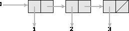
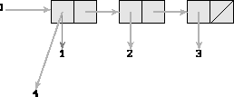
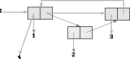
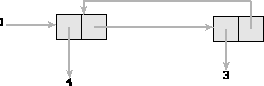
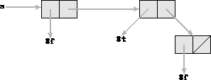
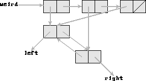

There are two separate applications included with EnvDraw. The first is a box and pointer diagrammer. To use the box and pointer diagrammer, just type (view data).
(define l (list 1 2 3))
(view l)

Figure 1: View of the list (1 2 3)
A top-level window will be created containing a diagram of the symbol `l' pointing to the diagram of the list. The window containing the diagram has a label and three buttons on the top. Entering any item with the mouse will print the printed representation of that cell in the label. There is an options menu at the top left of the window with entries labeled dismiss, focus, and colors. The dismiss entry destroys the window. The focus entry is a checkentry which indicates that a particular window is the current window into which new diagrams will be drawn. If a particular window is the current window, pressing the focus entry will unfocus it, so that the next time view is called a new window will be created. Otherwise, pressing the focus entry will make that window the currentwindow. The colors entry opens a menu which allows selection of a color which determines the color of anything new drawn in that window. Once a particular cell is drawn, any mutation of that cell will be recorded. For example, continuing with the above example, if you now type:
(set-car! l 4)

Figure 2: View of the list after a set-car!
The cell which l points to now has a pointer to a 4 instead of the 1 which it previously pointed to. The old pointer has thinned and darkened, but remains on the diagram. You can remove the 1 and the pointer to it by clicking Button-3 on the 1 or the pointer to it. When the mutation occured new data had to be put on the diagram. Since it would be difficult to pick a really good place to diagram new objects and cells, anything on the diagram is movable. It will, however, try to find a good place to put the new data. To move an item, click Button-1 over that item and drag it. This will move the item and any descendants of it. This will let you arrange the diagram to exploit any symmetries or organize the diagram. Button-2 will move just one item and not its descendants. The diagrammer will work for arbitrarily circular and complicated list structures. You can also mutate cell pointers to data which is already diagrammed. For example, now try:
(set-cdr! (cddr l) l) (set-cdr! l (cddr l))

Figure 3: View of the list after more mutation
Now the tail of the list points to itself and one of the cells has been spliced out. In the label at the top of the window, a (4 3 ...) will be displayed if the front of the list is entered.

Figure 4: View of the list after removing garbage
The algorithm that initially places the cells can either produce tree structured data structures or list structures. Each cell may be drawn with its pointers pointing down and to the left and right as if it were a tree node or with its car pointer going straight down and its cdr pointer going to the right. The method that is chosen is based on the return value of a predicate, which is called with the cell in question as an argument. This predicate must return true if the cell is to be drawn as a tree and false if the cell is to be drawn as a list. This predicate defaults to (lambda (x) (not (list? x))), so that anything that is a true list will be drawn so. You can tell it to use a different predicate by specifying it as an additional argument to view. For example, you can draw a weird looking structure with
(define s (list #f #t #f))
(view s (lambda (x) (car x)))

Figure 5: You can tell the algorithm how to draw the structure
Set! is also redefined so that if you modify the binding of a viewed symbol it will update the diagram. If you view something that is not bound by a symbol, it will be diagrammed with #[no binding] as its symbol. If you redefine something which has been viewed, it will not update the diagram, if you feel this is really a problem send me a complaint. If you have mutated a list such that there are cells on the diagram which are not pointed to by anything on the diagram, they will be marked by stippling the body of the cell and darkening it. You can delete it in the same method described above. Press Button-3 and you will delete it and anything that points to it or that it points to. How can anything point to it? Pointers stay around after set-car! and set-cdr! act upon a cell, though darkened and thinned. It is also possible that another symbol is bound to that data though it has been marked as garbage in the diagram. If you somehow try to view that data after it has been marked as garbage, it will unmark itself properly. If you do not like keeping garbage around on the diagram, there is a variable GARBAGE_COLLECT? which is false by default which tells it whether to automatically delete garbage from the diagram. It is set in the EnvDraw/view.stk file, relative to the library directory, along with a few other user-customizable variables.
(define weird
(let ((it (cons 'left 'right))
(it2 (cons 'left 'right)))
(set-cdr! it it2)
(set-car! it2 it)
(list it it2 it)))

Figure 6: View of weird